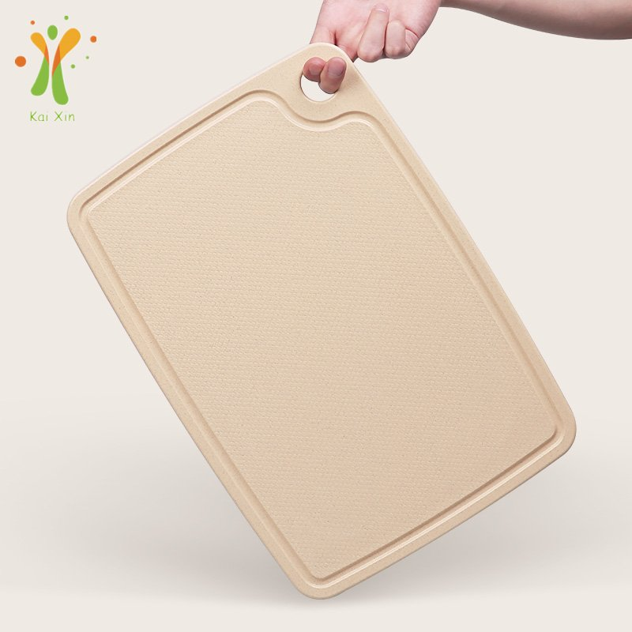
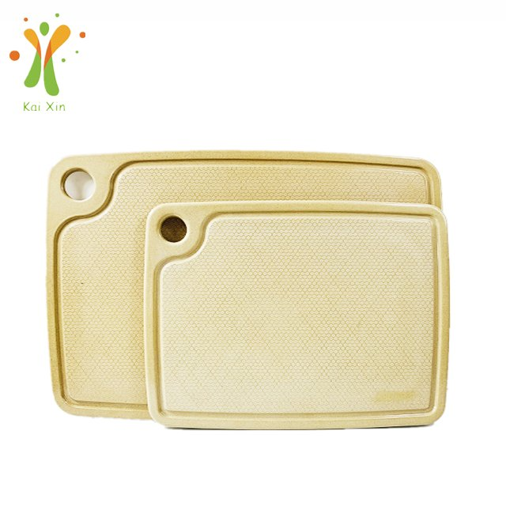
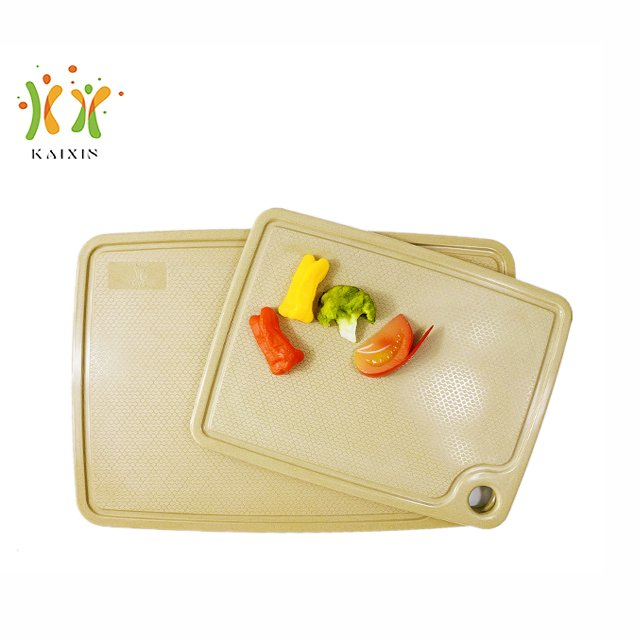
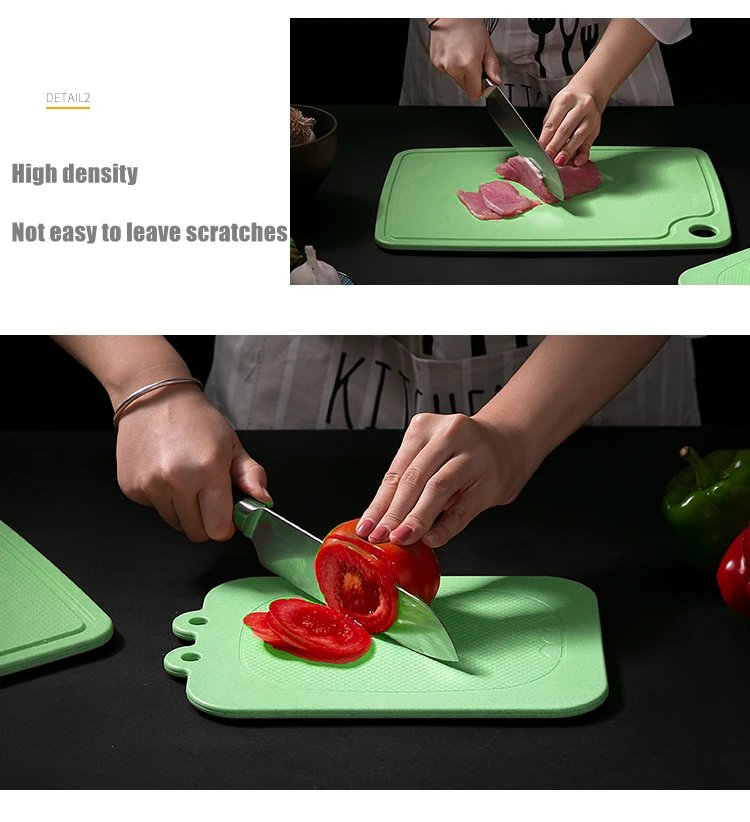
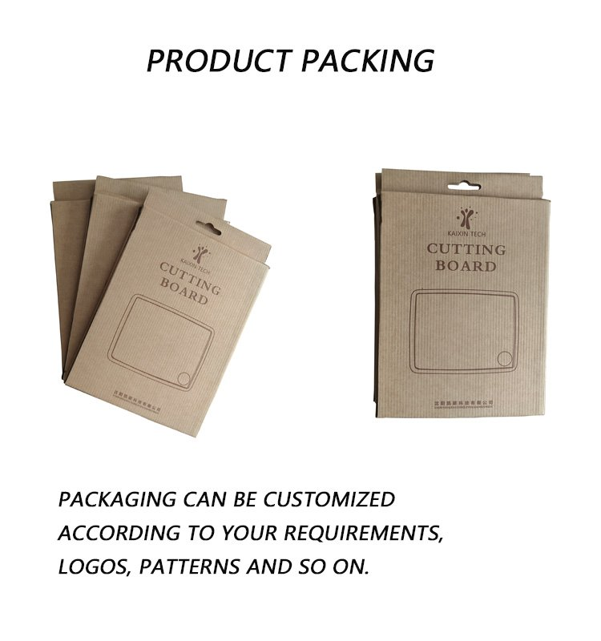

The everyday plant-fibre board
A durable cutting board pressed from rice husk fibre and a food-grade starch binder. Its hard, fine-grained surface stands up to daily prep far better than ordinary timber, while the natural material stays odourless and easy to clean. Two sizes cover everything from a quick chop to a family roast.
| Material | Rice husk fibre + 20% food-grade starch binder |
|---|---|
| Sizes | 400 × 280 × 8.5 mm (40 × 28 cm) | 300 × 230 × 8.5 mm (30 × 23 cm) |
| Weight | 1,400 g | 850 g |
| Colour | Natural rice-husk colour (custom colours available) |
| Thickness | 8.5 mm standard; other thicknesses available on request |
| Packaging | Custom single-item box or kraft carton available |
| Feature | Knife-scratch resistant, non-porous, easy to clean |
| Certification | SGS-tested food-contact material; LFGB / REACH statements available |
Natural does not mean basic. This board is engineered around the two things a daily board must do: stay pleasant to cut on, and stay clean.

Moulded under high temperature and pressure, the rice husk fibre forms a dense, consistent surface. It resists the deep scoring that wood takes and the grooves that soften plastic boards over time, so it stays smoother through repeated prep. The material is firm under the knife without being harsh on the blade edge.
The pressed surface does not soak up juices or hold on to smells the way an end-grain wooden board can. Clean it with hand washing, or a standard dishwasher cycle. For colour-coded kitchens, the same board is also available in custom Pantone colours — see the coloured range.
See Coloured Boards
This board is supplied to private-label brands and distributors, not just to kitchens. Add your logo by moulding or printing, choose a kraft box with your artwork and barcode, and pick the barcodes and carton quantities that fit your fulfilment. Coloured samples take 2–3 weeks, and we welcome third-party inspection before shipment.
The natural board shares its material with our Pantone-coloured, silicone-ring and anti-slip-dot boards. Build a full range on one platform.
Explore the Coloured BoardTell us the size, quantity and packaging you need. We will send the spec sheet, MOQ and sample photos.